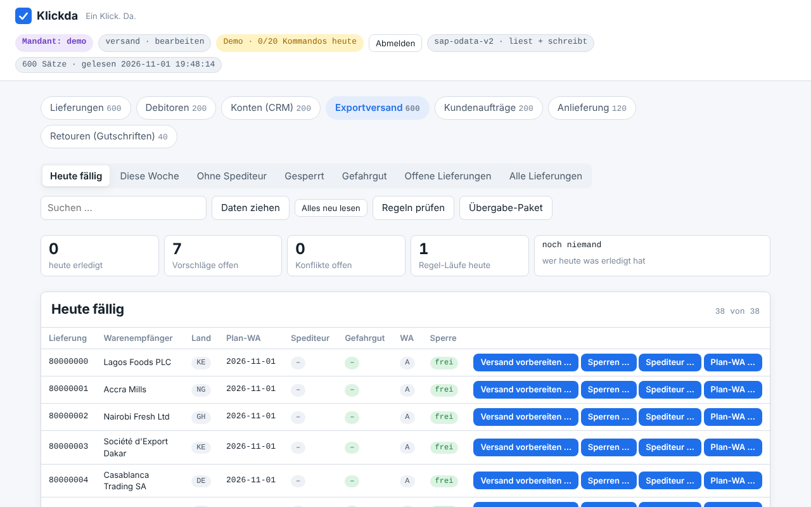
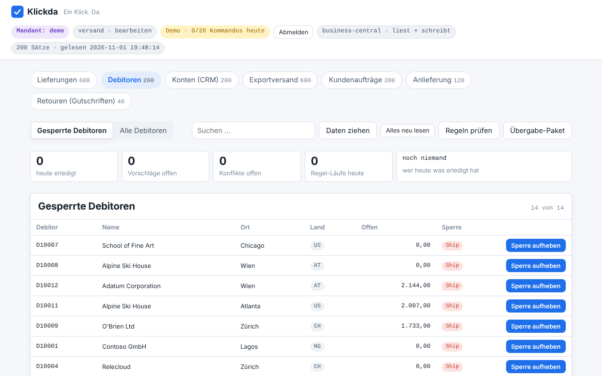
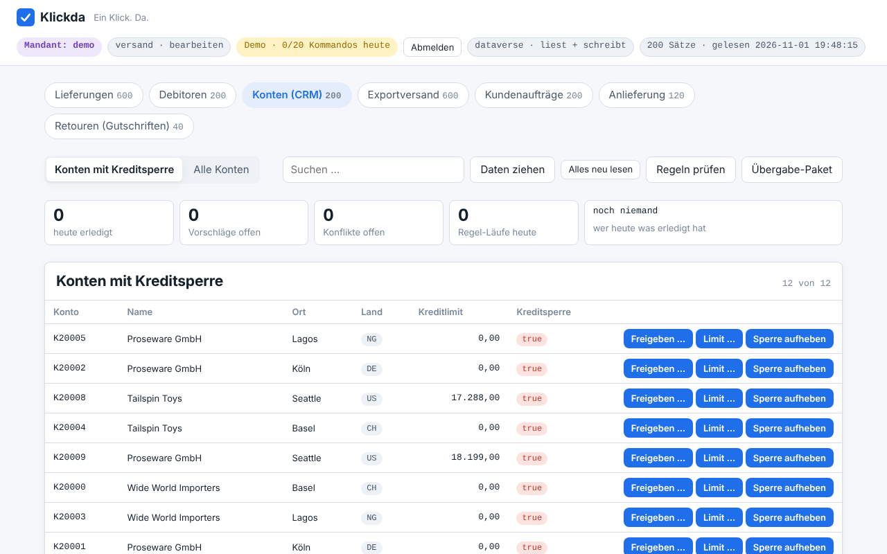
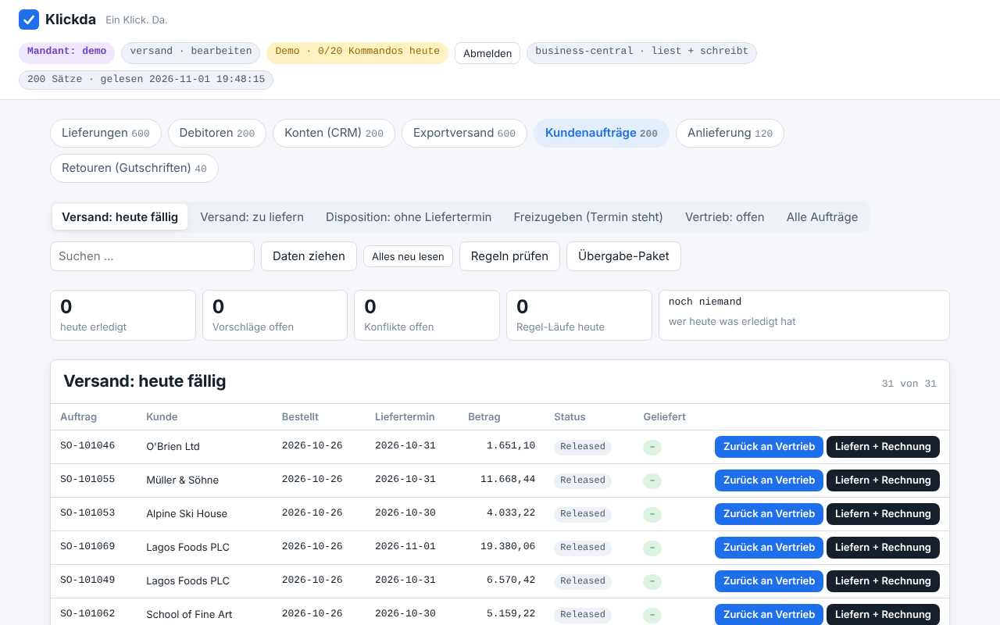

Heute
VL02N öffnen, Lieferung eingeben, Reiter wechseln, Feld setzen, sichern — je Lieferung. Dazwischen die Liste neu laden, damit man weiß, wo man steht. Achtzehn Vorgänge, bevor der erste Spediteur angerufen ist.
Drei Lagen, drei Systeme, ein Klick
Jede Lage hier ist eine echte Demo: Daten in nachgebauten Gateways, dieselben Sichten und Regeln, die ein Pilot bekommt, Bildschirmfotos aus der automatischen Abnahme. Die Zahlen stehen so im Code und werden bei jedem Stand nachgezählt. Und am Ende jeder Lage rechnen Sie selbst, was der Status quo kostet — mit Ihren Zahlen.
npm run demo -- --szenario montag-versand startet jede Lage lokal, ohne echtes System.
SAP S/4HANA · API_OUTBOUND_DELIVERY_SRV · Pilot-Paket Exportversand
Es ist 7:40 Uhr. Der LKW nach Antwerpen holt um 14:00 ab. In VL06O stehen die heute fälligen Lieferungen, aber die Liste sagt nicht, welche davon noch keinen Spediteur haben, welche eine Haus-Sperre tragen, die längst geprüft ist, und welche Gefahrgut sind.

VL02N öffnen, Lieferung eingeben, Reiter wechseln, Feld setzen, sichern — je Lieferung. Dazwischen die Liste neu laden, damit man weiß, wo man steht. Achtzehn Vorgänge, bevor der erste Spediteur angerufen ist.
Die Sicht zeigt die Lage mit Zahlen. „Ohne Spediteur": je Zeile „Versand vorbereiten …" — Spediteur und Plan-Warenausgang in einem Klick. Die Regel „Haus-Sperren fällig" schlägt die geprüften Sperren vor, „Alle freigeben" erledigt sie mit Namen im Protokoll. Jeder Klick ein PATCH mit frischem ETag, jeder rückgängig.
Microsoft Dynamics 365 Business Central · API v2.0
Die Buchhaltung hat Zahlungseingänge gebucht. Die Liefersperre (Ship) wurde beim Mahnen gesetzt — zurückgenommen wird sie, wenn jemand daran denkt. Niemand denkt daran. Der Vertrieb erfährt es, wenn der Auftrag hängt.

Debitorenliste filtern, Kundenkarte öffnen, Saldo prüfen, Sperre auf leer setzen — je Debitor. Oder warten, bis sich jemand beschwert. Dann ist der Auftrag schon zwei Tage alt.
Die Regel „Liefersperre ohne offenen Saldo" findet jeden gesperrten Debitor mit Saldo 0 und legt Vorschläge an — sie schreibt nichts. Ein Blick, „Alle freigeben": jede Freigabe mit Name und Zeit im Protokoll, jede rückgängig machbar. Und morgen läuft die Regel wieder.
Microsoft Dataverse · Dynamics 365 Sales
Zwölf Konten stehen auf Kreditsperre. Für acht davon hat die Finanzabteilung ein neues Limit genehmigt — per Mail. Im CRM sind es zwei Masken je Konto: Sperre weg, Limit eintragen. Bis dahin kann der Vertrieb kein Angebot freigeben.

Konto suchen, Formular öffnen, Kreditsperre abwählen, speichern; Limit-Feld, Betrag, speichern — und die Mail mit der Genehmigung daneben. Acht Mal. Vergisst man das zweite Speichern, steht das Konto frei, aber ohne Limit.
„Freigeben …" am Konto fragt das Limit und erledigt beide Felder als einen Ablauf: Sperre weg, Limit neu. Bricht der zweite Schritt ab, nimmt Klickda den ersten zurück — es gibt kein freies Konto ohne Limit. Ein Klick, ein Protokolleintrag, rückgängig als Ganzes.
Microsoft Dynamics 365 Business Central · Kundenaufträge, Anlieferung, Retouren
Ein Kunde bestellt, ein Lieferant liefert an, ein anderer schickt zurück. Jeder Beleg wandert durch Vertrieb, Disposition, Freigabe, Lager, Versand und Buchhaltung — und in jeder Abteilung heißt das: Beleg suchen, öffnen, Status prüfen, Feld setzen, freigeben, buchen. Fünf Abteilungen, fünf Listen, und keine sagt, was heute dran ist.

Je Abteilung die eigene Liste: Belegkarte öffnen, Reiter, Feld, Status, Freigabe — und bei einer Terminverschiebung drei Masken: wieder öffnen, Datum, freigeben. Buchungen am Ende des Tages, wenn jemand dazu kommt. Was liegen bleibt, merkt der Kunde.
Jede Abteilung bekommt ihre Sicht. Disposition: „Termin + Freigabe …" in einem Klick. Versand: „Liefern + Rechnung" als Buchung — die Oberfläche fragt einmal, dann ist es gebucht, kein Rückgängig, der Beleg verschwindet aus der Liste wie in BC. Wareneingang: „Termin verschieben …" erledigt drei Masken als einen Ablauf. Buchhaltung bucht die Gutschrift. Die Regel schlägt die alten offenen Aufträge zur Freigabe vor.
Jede dieser Lagen ist ein Workflow-Paket: eine Datei mit Bereich, Sichten, Kommandos, Regeln und Abläufen. Ihre Lage wird die nächste — im Pilot, mit einem Bereich, einer Sicht und einem Feld, in sechs Wochen. Was dabei entsteht, gehört Ihnen: das Übergabe-Paket enthält den Prozess, die Spezifikation mit Code und das Protokoll.